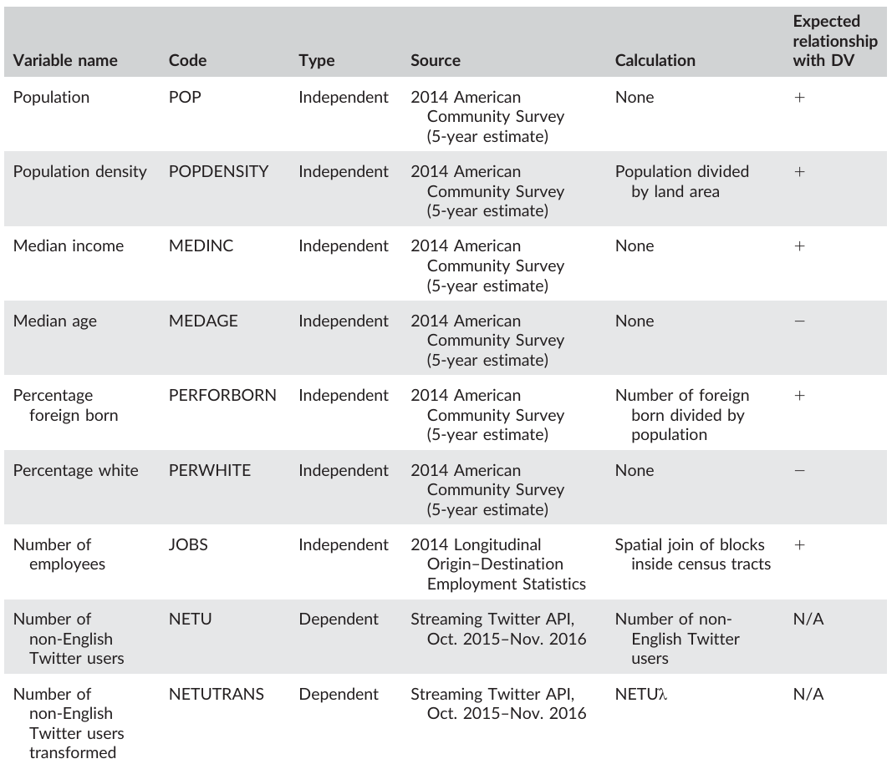
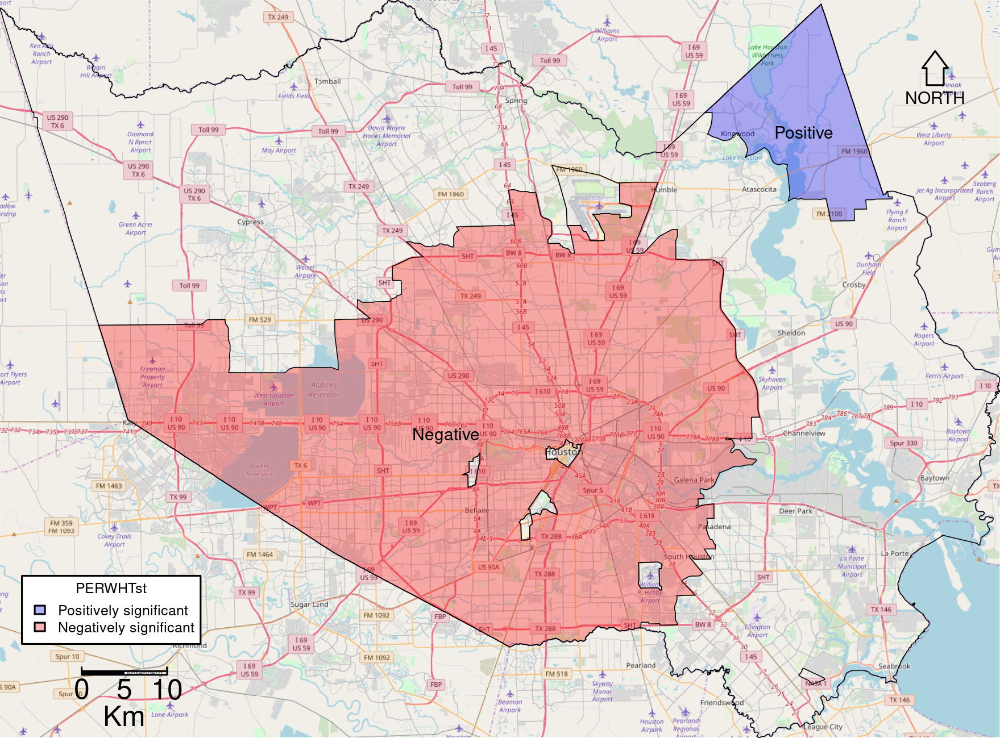

name: inverse layout: true class: center, middle, inverse --- #A spatial analysis of non-English Twitter activity in Houston, TX Matthew Haffner Department of Geography Oklahoma State University https://mhaffner.github.io .footnote[created with remark.js] --- layout: false .left-column[ ## Introduction ### - VGI/CGI ] .right-column[ - Volunteered (Goodchild 2007) or contributed (Harvey 2013) geographic information can supplement (or replace) conventional data sources (See et al. 2016) - Cities in particular are becoming more reliant on big data (Kitchin 2014) - Significance: Governments can use social media to address the needs of underrepresented groups ] --- .left-column[ ## Introduction ### - VGI/CGI ### - Data Quality ] .right-column[ - User-contribued sources of geographic information suffer from a number of shortcomings - A wealth of research has been conducted on the _accuracy_ of explicitly geographic CGI platforms - Much less has examined _validity_ of implicitly geographic VGI/CGI platforms (e.g., Location-based social media (LBSM) sources like Twitter) ] --- .left-column[ ## Introduction ### - VGI/CGI ### - Data Quality ## Research focus ### - Approach ] .right-column[ - Counts of _users_ rather than _tweets_ - _Account_ language rather than _tweet_ language ] --- .left-column[ ## Introduction ### - VGI/CGI ### - Data Quality ## Research focus ### - Approach ] .right-column[ - Counts of _users_ rather than _tweets_ - _Account_ language rather than _tweet_ language ```json "_source": { "created_at": "Sat Sep 03 11:57:06 +0000 2016", "text": "So happy to spend my senior year by your side 💓 @ Green Lake, Wisconsin https://t.co/BLWIObnrxD", "user": { "location": "WI, USA", "description": "livin' life, like I lived twice", "followers_count": 786, "friends_count": 638, "favourites_count": 4758, "statuses_count": 9052, "time_zone": "Madrid", * "lang": "es" }, "geo": { "type": "Point", "coordinates": [ 43.84277778, -88.95777778 ] }, * "lang": "en" } ``` ] --- .left-column[ ## Introduction ### - VGI/CGI ### - Data Quality ## Research focus ### - Approach ] .right-column[ - _Precise_ location as opposed to _general_ ] --- .left-column[ ## Introduction ### - VGI/CGI ### - Data Quality ## Research focus ### - Approach ] .right-column[ - _Precise_ location as opposed to _general_ ```json "geo": { "type": "Point", * "coordinates": [ * 43.84277778, * -88.95777778 ] }, "place": { "full_name": "Wisconsin, USA", "bounding_box": { "type": "Polygon", * "coordinates": [ * [ * [ * -92.889433, * 42.491921 * ], * [ * -92.889433, * 47.309715 * ], * [ * -86.24955, * 47.309715 * ], * [ * -86.24955, * 42.491921 ] ] ] } } ``` ] --- .left-column[ ## Introduction ### - VGI/CGI ### - Data Quality ## Research focus ### - Approach ### - Questions ] .right-column[ 1. Can conventional variables explain the production of Twitter activity by non-English users? 2. How does LBSM inform us about place and users' behaviors? 3. Is LBSM valid for studying spatial processes? ] --- .left-column[ ## Introduction ### - VGI/CGI ### - Data Quality ## Research focus ### - Approach ### - Questions ## Data & methods ] .right-column[ - Counts of users with an account language other than English (i.e. non-English Twitter users) who produced a geotagged tweet within census tracts in Harris County, Texas (Houston area) from October 2015 - November 2016. - Geographically weighted regression (GWR) ] --- .left-column[ ## Introduction ### - VGI/CGI ### - Data Quality ## Research focus ### - Approach ### - Questions ## Data & methods ] .right-column[ .center[Variables] <br/>  ] --- .left-column[ ## Introduction ### - VGI/CGI ### - Data Quality ## Research focus ### - Approach ### - Questions ## Data & methods ## Results ] .right-column[ .center[GWR Results <br/> <br/> ]] --- .left-column[ ## Introduction ### - VGI/CGI ### - Data Quality ## Research focus ### - Approach ### - Questions ## Data & methods ## Results ] .right-column[ <br/> <br/> .center[Standardized GWR Coefficients] <br/> ] --- .left-column[ ## Introduction ### - VGI/CGI ### - Data Quality ## Research focus ### - Approach ### - Questions ## Data & methods ## Results ] .right-column[ <br/> .center[Percent White GWR Results <br/> <br/>  ]] --- .left-column[ ## Introduction ### - VGI/CGI ### - Data Quality ## Research focus ### - Approach ### - Questions ## Data & methods ## Results ] .right-column[ <br/> .center[Outliers of Non-English Twitter Users <br/> <br/> <img src="./images/lbsm-giscience/greatest-netu-tracts.png" width="100%" /> ]] --- .left-column[ ## Introduction ### - VGI/CGI ### - Data Quality ## Research focus ### - Approach ### - Questions ##Data & methods ## Results ## Conclusion ] .right-column[ ### Overarching thoughts/words of caution - Independent variables vary wildly within the top 8 NETU tracts - The effect of the number of employees (JOBS) is much stronger than the effect of residential population (POP) - The varying nature of location types - Information on place versus users ] --- .left-column[ ## Introduction ### - VGI/CGI ### - Data Quality ## Research focus ### - Approach ### - Questions ## Data & methods ## Results ## Conclusion ] .right-column[ ### Overarching thoughts/words of caution - Independent variables vary wildly within the top 8 NETU tracts - The effect of the number of employees (JOBS) is much stronger than the effect of residential population (POP) - The varying nature of location types - Information on place versus users ### Positive findings - Differences between data sources means something... right? - Relative abundance of Turkish users ] --- name: inverse layout: true class: center, middle, inverse Haffner, M. 2018. A spatial analysis of non-English Twitter activity in Houston, TX. Accepted for publication in _Transactions in GIS_. https://mhaffner.github.io/presentations/non-english-tweets.html ---